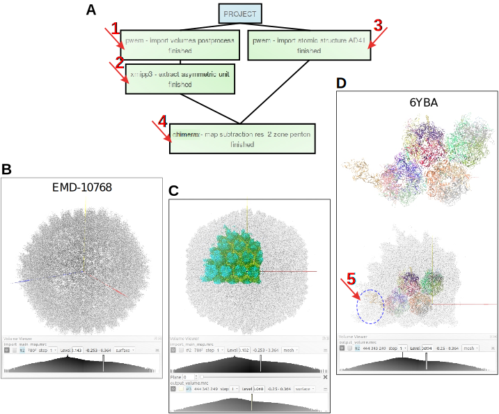
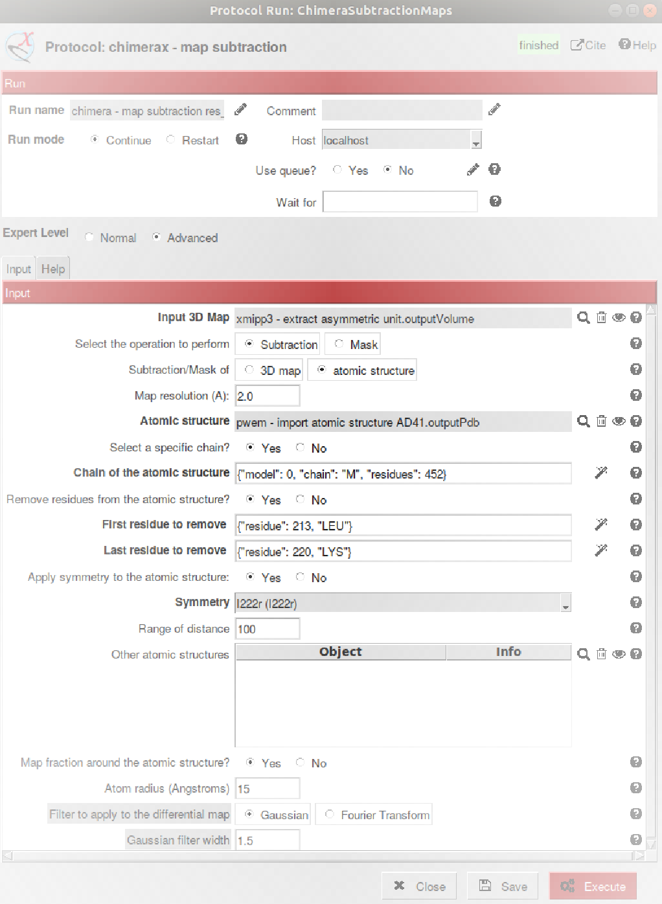
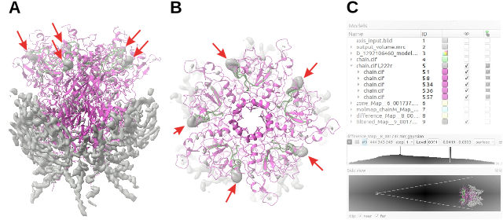
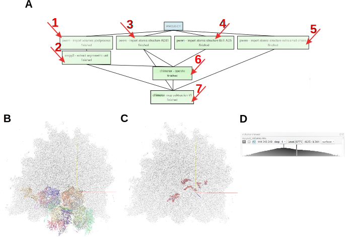
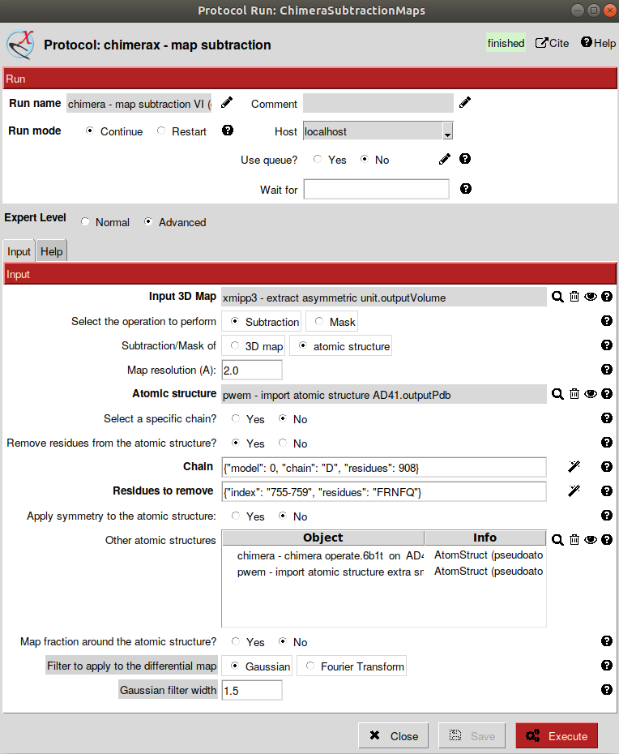

4. ChimeraX Map Subtraction protocol¶
ChimeraX-based protocol designed to subtract two maps. These two maps can be two density maps experimentally obtained or derived from different computations, including the generation of a density map from an atomic structure. In the context of the modeling workflow this protocol helps to find out unmodeled densities in a map as a whole or in a specific part of it. In addition, wrong modeled regions can be also identified with this protocol since the atomic structure could doesn’t fit to the density map.
- Requirements to run this protocol and visualize results:
- Scipion plugin: scipion-em
- Scipion plugin: scipion-em-chimera
- Scipion menu: Model building -> Tools-Calculators (Fig. 4.1 (A))
- Protocol form parameters (Fig. 4.1 (B,C,D)):Input section:
- Input 3D Map: Include here any map previously downloaded or generated in Scipion that you would like to use as minuend of the subtraction operation.
- Select the operation to perform: Two possibilities are allowed:
- Subtraction: Between minuend and subtrahend maps, and you’ll obtain the difference.
WARNING:Both maps have to be perfectly aligned. - Mask: The voxel region of the subtrahend greater than a certain level will be masked (Fig. 4.1 (C)). The default level is 0.001 although can be modified with the Advanced param Contour level (subtrahend). If no level is supplied, ChimeraX will compute that level value.
- Subtraction/Mask of: Select the subtrahend of the subtraction operation. Two possibilities are allowed:
- 3D map: Any map previously downloaded or generated in Scipion.
WARNING:The sampling rate of this map should be identical to the subtrahend’s. - atomic structure: Previously downloaded or generated in scipion. By selecting this option many new params will interrogate about the structure-derived map that you would like to generate (Fig. 4.1 (D)).
- Map resolution (Å): This is a tricky param and a uniform rule cannot be followed since, although its value is related with the minuend map resolution obtained by computing the FSC in the reconstruction process, local variations of this resolution seem to be involved. As a general rule, start with a resolution value half of the one obtained by the FSC and check your results. Then test other resolution values closer to the one computed by the FSC and compare the results with the previous one. At the end select the resolution that maximizes the difference between the minuend and the subtrahend.
- Atomic structure: Select the atomic structure in the workflow to generate the called molmap_Map.
- Select a specific chain?: In case you are interested in generate the sustrahend 3D map from the input atomic structure as a whole, answer No to this question. However, answer Yes if you want to derive that map from a specific chain of the atomic structure. If this is the case, a new param (Chain of the atomic structure) will interrogate you about the specific chain that you can select with the help of the wizard on the right.
- Remove residues from the atomic structure?: Select Yes to answer this question in case you’d like to count on a control of density levels to identify the differential density. The aim of this control is to identify the density of the removed residues in the differential map. However, be cautious about discarding other densities that could appear in lower resolution areas and have density levels slightly different to the control one. After running the program, the ChimeraX graphics window will open and the atomic structure won’t show the removed residues. To make easier the localization of this area, ten residues both upstream and downstream of the removed aminoacids will be highlighted.Additional params to interrogate about the residues to be removed are Chain, First residue to remove and Last residue to remove. A wizard on the right helps to select this three elements.
WARNING:In case you have already selected a specific chain of the structure to generate the 3D Map, this chain will appear by default in the param Chain since the selection of a different chain wouldn’t make sense. - Apply symmetry to the atomic structure: In case your input atomic structure to derive the subtrahend 3D map corresponds to the asymmetric unit and you’d like to have the whole atomic structure or at least several adjacent asymmetric units together with the input one, select the option Yes. Otherwise, the subtrahend derived map will only correspond to the asymmetric unit. All ChimeraX symmetries will be available. In case you select symmetries cyclic or dihedral, an additional param will interrogate you about the Symmetry Order. Pay attention to the param Range of distance, set to 100 by default. This is the distance (in Å) from the center of the input asymmetric unit to the center of additional allowed asymmetric units, in order to select only the closer ones. You should probably modify the default value to regenerate big maps by applying symmetry.
- Map fraction around the atomic structure?: Select the option Yes if you want to limit the input minuend 3D Map to a certain area around the atomic structure. This is the option recommended if you have a big starting map and you’d like to substract a much smaller subtrahend structure-derived map since the visualization of results will be much easier. An additional param, Atom radius (Å) asks you about the distance around the input structure used to crop the input 3D Map. 15 is the default value. The ChimeraX-generated map is called zone_Map.
- Other atomic structures: Additional atomic structures previously downloaded or obtained in Scipion can be included here to help you identify particular areas of the map or structure. Then, those structures are only informative and won’t be used to generate the subtrahend map.
- Filter to apply to the differential map: Advanced parameter to clean the background of the differential map by applying a filter in order to maximize the differences between the minuend and the subtrahend maps, since the differential map usually results quite blurry. This filtered_Map will always appear together with the difference_Map when the ChimeraX graphics window opens. To filter the differential map you can choose between two different filters, Gaussian (with variable width) and based on the Fourier Transform.
- Protocol execution:Adding specific volume label is recommended in Run name section, at the form top. To add the label, open the protocol form, press the pencil symbol at the right side of Run name box, complete the label in the new opened window, press OK, and finally, close the protocol. This label will be shown in the output summary content (see below). If you want to run again this protocol, do not forget to set to Restart the Run mode.Press the Execute red button at the form bottom.After executing the protocol the ChimeraX graphics window will open and show the different inputs (maps and atomic structures), as well as the maps generated by the ChimeraX commands such as molmap_Map, zone_Map, difference_Map and filtered_Map. Most of the outputs are already saved in Scipion, however you can perform any operation of your preference and save the new results before closing ChimeraX. Common commands of ChimeraX-Scipion communication are allowed in this case: scipionwrite, scipionss and scipioncombine.
Visualization of protocol results:
After exiting the protocol, press Analyze Results and the ChimeraX graphics window will open with every saved elements, inputs and outputs, which might be distinct acording to the inputs. In addition to items mentioned in the previous paragraph, the atomic structure without the removed residues used as a control, called mutated_Atom_structure will be also shown overlapping the input structure.By pressing the left black arrow shown in the Summary Output the saved maps can be also opened with ShowJ, the default Scipion viewer that shows each map’s slices (ShowJ).Summary content:
- Protocol output (below Scipion framework):For each map: chimerax - map subtraction -> ouput map name;Volume (x, y, and z dimensions, sampling rate).For each atomic structure: chimerax - map subtraction -> output atomic structure name;AtomStruct (pseudoatoms=False, volume=False).
- SUMMARY box:Produced files:List of output map nameswe have some result
{kind=link}
4.1. USE CASES¶
- Use Case 1: Detection of remnant density in the penton region of the human adenovirus HAdV-F41 density map (EMDB ID EMD-10768, [Pérez-Illana et al., 2021])Aim: Run the workflow depicted in Fig. 4.2 (A). The output of protocols 1, 2 and 3 can be seen in the ChimeraX viewer by pressing Analyze Results.
- In Fig. 4.2 (B) appears the whole adenovirus map, output of protocol 1. To visualize this map write in ChimeraX command line:
volume #2 region all showOutline false
and adjust level densities according to level indicated in the Volume Viewer shown. - In Fig. 4.2 (C) the extracted asymmetric unit is shown, overlapped to the whole map, as output of protocol 2. To visualize these maps, in addition to the previous ChimeraX command line and the adjustment of map levels indicated below, modify the transparency of the whole map writing:
volume #2 transparency 0.8
- Finally, Fig. 4.2 (D) details the atomic structure of the biological asymmetric unit obtained by modeling as output of protocol 3 (PDB ID 6YBA). Select Atoms -> Hide and Cartoons -> Show to change to ribbons the view of the structure. The overlapping of this structure to the geometrical map asymmetric unit allows to observe the area (5, dotted blue circle) where the penton is located and we will try to see a remnant density. To visualize the map, write in the command line:
volume #2 transparency 0.9
Fig. 4.2 (A) Scipion workflow showing protocols 1, 2, 3 and 4. (B) Adenovirus HAdV-F41 map image. (C) Map geometrical asymmetric unit extracted from the adenovirus map. (D) Adenovirus atomic structure of the biological asymmetric unit overlapped to the geometrical map unit.¶
To look for remnant densities in the penton area we have to complete the protocol with the indicated params (Fig. 4.3). Remark that in this case we have selected half of input 3D Map resolution (4 Å) although other values could be tested. The only chain of the penton in the atomic structure of the asymmetric structure is the chain M, inside the dotted blue circle of Fig. 4.2 (D), and 8 residues will be removed as a control of density levels. In addition, icosahedral I222r symmetry will be applied to the selected chain in order to complete the five units of the penton. In order to visualize better the map difference, a map fraction around the atomic structure is selected.
Fig. 4.3 Completing the protocol chimerax-subtraction to find renmant densities in the penton area of the adenovirus map.¶
Protocol execution: Follow the general procedure shown above (Protocol execution section) and ChimeraX graphics window will open. At this point several maps and atomic structures will be shown, as the Models panel indicates (Fig. 4.4 (C, top)). Have a look to each map and structure to identify them and play with the density levels to maximize the differences between the input 3D Map restricted to the penton area (zone_Map) and the penton atomic structure-derived map (molmap_chainM_Map). The Fig. 4.4 images A and B show the difference filtered_Map in the penton side (A) and upper (B) views, respectively, according to the density level observed on the Volume Viewer panel (C, middle). Red arrows point at the densities associated to the removed residues used as a density control. The adjacent ten residues to the removed ones upstream and downstream are green-highlighted. The penton upper view (B) was obtained opening the main menu (Tools -> General -> Side View and setting the view as indicated (C, botton). From these results we can conclude that a remnant density in the upper part of the penton, if exits, it is not so evident.
Fig. 4.4 (A) Side view of the adenovirus penton atomic structure (magenta) and the gaussian filtered difference map (grey). (B) Upper view. (C) From top to bottom, ChimeraX Models panel, Volume Viewer panel, specified for the gaussian filtered difference map, and Side View panel, respectively.¶
With the exception of the input adenovirus biological asymmetric unit atomic structure, the rest of elements shown in ChimeraX graphics window will also appear in the ChimeraX viewer that opens pressing Analyze results. Consider then the possibility of performing additional operations and saving them with the scipionwrite command before closing the graphics window. After exiting the protocol you can visualize your results.
- Use Case 2: Since the asymmetric unit of the human adenovirus HAdV-C5 atomic structure contains a small chain called X (PDB ID 6B1T), we’d like to check if there is a remnant density in the previous human adenovirus HAdV-F41 density map (EMDB ID EMD-10768) that could be interpreted as the HAdV-C5’s chain X.Aim: Run the workflow depicted in Fig. 4.5 (A) to inspect for remnant densities around the area covered by the hexons in the biological asymmetric unit area of the adenovirus map (A, 6). The output of all protocols can be seen in ChimeraX viewer by pressing Analyze Results.
- In Fig. 4.2 (B, C, D) you also have the output of protocols 1, 2 and 3.
- The output of the protocol 4 shows the atomic structure of human adenovirus HAdV-C5. Select Atoms -> Hide and Cartoons -> Show to change to ribbons the view of the structure. This structure was fitted to the map asymmetric unit of adenovirus HAdV-F41 by using the protocol chimerax-operator (6) and the result of this oputput, overlapped to the geometrical map asymmetric unit, is shown in Fig. 4.5 (B). To visualize this map write in the command line:
volume #2 transparency 0.8
and adjust level densities according to level indicated in the shown Volume Viewer (Fig. 4.5 (D)). Select Atoms -> Hide and Cartoons -> Show to change to ribbons the view of the structure. The output of protocol 5 details some small chains of ALA residues previously traced in the remnant density of the adenovirus HAdV-F41. They are used as a control to be sure that we identify new densities previously unmodeled. Since they are very small we have depicted them selecting Styles -> Stick and overlapped to the geometrical map asymmetric unit (Fig. 4.5 (C) with the same transparency and map adjustment shown in (B).
Fig. 4.5 (A) Scipion workflow showing protocols 1-7. (B) HAdV-F41 adenovirus geometrical map asymmetric unit (grey) and, fitted to it, the atomic structure of the biological asymmetric unit atomic structure of HAdV-C5 adenovirus (colored). (C) HAdV-F41 adenovirus geometrical map asymmetric unit (grey) and some small aminoacid chains previously traced in the remnant density, imported in the protocol 5 (colored). (D) Level of density selected to visualize the map in B and C.¶
To look for remnant densities in the area of hexons we have to complete the chimerax-subtraction protocol with the indicated params (Fig. 4.6). As in the previous use case, we have selected half of input 3D Map resolution (4 Å) although other values could be tested.Taking into account that the remnant densitities could be quite inconspicuous we are going to use two different controls this time. One of them will be, as in the previous use case, the deletion of 5 residues of hexon chain D, in a region presumed to be quite close to the remnant density that we are looking for. The second control will be some small aminoacid chains previously traced in the remnant density since we’d like to discriminate between this density and other new one and unmodeled density. These extra small chains have to be included in the form param Other atomic structures.Although this time we do not have to consider a specific chain or applying symmetry, since we have to look for a chain similar to HAdV-C5 adenovirus chain X, it is quite recommendable to include in the form param Other atomic structures the structure 6B1T fitted to the geometrical map asymmetric unit, as shown in Fig. 4.5 (B), and obtained from protocol 6 (A).Fig. 4.6 Completing the protocol chimerax-subtraction to find renmant densities in the biological asymmetric unit area of the adenovirus map.¶
Protocol execution: Follow the general procedure shown above (Protocol execution section) and ChimeraX graphics window will open. At this point several maps and atomic structures will be shown, as the Models panel indicates (Fig. 4.7 (A, bottom)), except the model #6. Have a look to each map and structure to identify them and play with the density levels to maximize the differences between the input 3D Map (output_volume.mrc) and the 6YBA atomic structure-derived map (molmap_Map). Fig. 4.7 (A) shows the difference filtered_Map obtained. The zoom in on the framed area displays in detail the difference considering two different map levels (B and C). To have this view, besides select the molecules to show according to the Models panel (A, bottom), write in ChimeraX command line:volume #2 transparency 0.8 select #4/X save /tmp/6b1t_chainX.cif format mmcif models #4 selectedOnly true open /tmp/6b1t_chainX.cif
HAdV-C5 adenovirus chain X can be visualized as model #6.The result, described in Fig. 4.7, doesn’t demonstrate a clear continuous density in the proximity of the HAdV-C5 adenovirus chain X. Although not very evident, it could be there. Then we cannot conclude that it doesn’t exit, only that we were unable to identify it.
![(A) Gaussian filtered difference map (grey) of adenovirus HAdV-F41 asymmetric unit (top) and *Models* panel of items loaded in *ChimeraX* including the *model* *#6* (bottom). (B) Zoom in on the subtracted area with the map density level indicated in the *Volume Viewer* below . (C) Idem with a higher cleaning of the background. The red arrow points at the control density. The green arrow points at the HAdV-C5 adenovirus chain *X*. The purple arrow points at one of the adenovirus HAdV-F41 small chains previously traced.](../../../../_images/Fig315.svg)
Fig. 4.7 (A) Gaussian filtered difference map (grey) of adenovirus HAdV-F41 asymmetric unit (top) and Models panel of items loaded in ChimeraX including the model #6 (bottom). (B) Zoom in on the subtracted area with the map density level indicated in the Volume Viewer below . (C) Idem with a higher cleaning of the background. The red arrow points at the control density. The green arrow points at the HAdV-C5 adenovirus chain X. The purple arrow points at one of the adenovirus HAdV-F41 small chains previously traced.¶